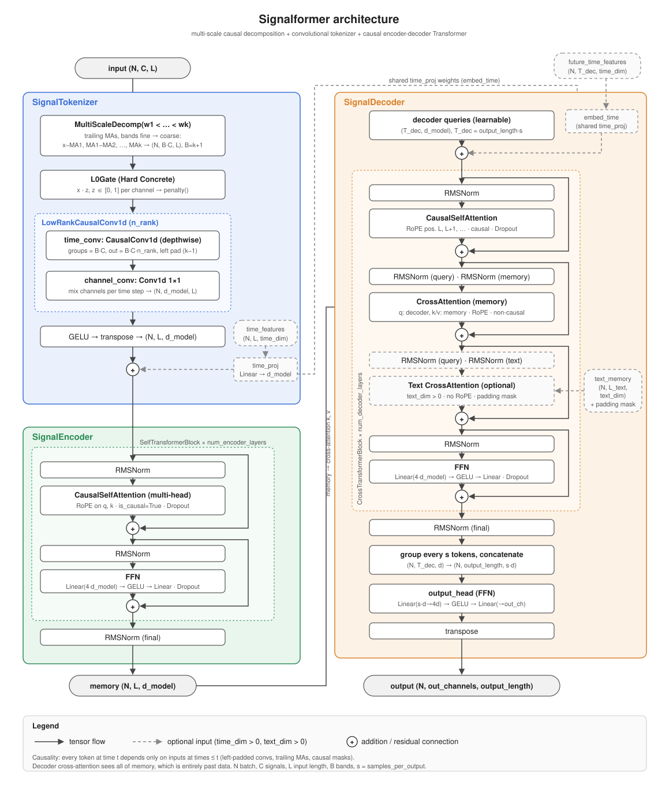
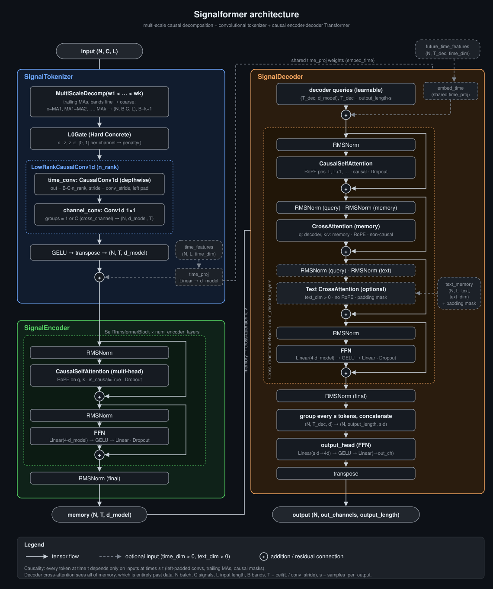

<title>Signalformer Architecture</title>
<meta name="claude:viewport-fit-sides" content="cover">
<link rel="preconnect" href="https://fonts.googleapis.com">
<link rel="preconnect" href="https://fonts.gstatic.com" crossorigin>
<link rel="stylesheet" href="https://fonts.googleapis.com/css2?family=Archivo:wdth,wght@87,600;87,700&family=IBM+Plex+Sans:ital,wght@0,400;0,600;1,400&family=IBM+Plex+Mono:wght@400;500&display=swap">
<style>
  /* Layout: one reading column of technical prose; the diagram breaks out wider; each module section is keyed
     to the diagram's own color (tokenizer blue, encoder green, decoder orange). */
  :root {
    --bg: #f7f8fa;
    --surface: #ffffff;
    --fg: #1d2330;
    --muted: #5a6475;
    --rule: #dde1e8;
    --code-bg: #eef1f5;
    --tok: #3b6fd4;
    --enc: #2e8b57;
    --dec: #c46d1c;
    --opt: #7b8494;
    --font-display: "Archivo", "Helvetica Neue", Arial, sans-serif;
    --font-body: "IBM Plex Sans", "Helvetica Neue", Arial, sans-serif;
    --font-mono: "IBM Plex Mono", ui-monospace, "SFMono-Regular", Menlo, monospace;
    --img-light: block;
    --img-dark: none;
  }
  @media (prefers-color-scheme: dark) {
    :root:not([data-theme="light"]) {
      --bg: #0d1117; --surface: #161b22; --fg: #e6edf3; --muted: #9198a1; --rule: #30363d; --code-bg: #1f252e;
      --tok: #6ea8fe; --enc: #56d364; --dec: #f0a35e; --opt: #7d8590;
      --img-light: none; --img-dark: block;
      color-scheme: dark;
    }
  }
  :root[data-theme="dark"] {
    --bg: #0d1117; --surface: #161b22; --fg: #e6edf3; --muted: #9198a1; --rule: #30363d; --code-bg: #1f252e;
    --tok: #6ea8fe; --enc: #56d364; --dec: #f0a35e; --opt: #7d8590;
    --img-light: none; --img-dark: block;
    color-scheme: dark;
  }

  body {
    background: var(--bg);
    color: var(--fg);
    font-family: var(--font-body);
    font-size: 1rem;
    line-height: 1.65;
    padding-left: max(16px, env(safe-area-inset-left, 0px));
    padding-right: max(16px, env(safe-area-inset-right, 0px));
    padding-block: 3rem 4rem;
  }
  main { max-width: 46rem; margin: 0 auto; display: grid; gap: 3rem; }
  header { display: grid; gap: 0.75rem; }
  .eyebrow {
    font-family: var(--font-mono); font-size: 0.75rem; letter-spacing: 0.08em; text-transform: uppercase;
    color: var(--muted);
  }
  h1, h2, h3 { font-family: var(--font-display); font-stretch: 87%; text-wrap: balance; margin: 0; line-height: 1.15; }
  h1 { font-size: clamp(2rem, 5vw, 2.75rem); font-weight: 700; }
  h2 { font-size: 1.6rem; font-weight: 700; }
  h3 { font-size: 1.15rem; font-weight: 600; }
  p, ul, ol { margin: 0; }
  ul, ol { padding-left: 1.25rem; display: grid; gap: 0.35rem; }
  .lede { font-size: 1.125rem; color: var(--muted); max-width: 40rem; }
  code, .mono { font-family: var(--font-mono); font-size: 0.875em; }
  code { background: var(--code-bg); padding: 0.1em 0.35em; border-radius: 3px; }
  pre {
    margin: 0; background: var(--code-bg); padding: 1rem; border-radius: 6px; overflow-x: auto;
    font-family: var(--font-mono); font-size: 0.85rem; line-height: 1.55;
  }
  pre code { background: none; padding: 0; font-size: inherit; }
  a { color: var(--tok); }
  :focus-visible { outline: 2px solid var(--tok); outline-offset: 2px; }

  .figure {
    /* Break out of the 46rem column and center on the viewport */
    --fig-w: min(70rem, calc(100vw - 2 * max(16px, env(safe-area-inset-left, 0px))));
    width: var(--fig-w);
    margin-left: calc(50% - var(--fig-w) / 2);
    display: grid; gap: 0.5rem;
  }
  .figure-scroll {
    overflow-x: auto; background: var(--surface); border: 1px solid var(--rule); border-radius: 8px;
  }
  .figure img { max-width: none; width: 100%; min-width: 760px; height: auto; }
  .figure .light { display: var(--img-light); }
  .figure .dark { display: var(--img-dark); }
  .caption { font-size: 0.85rem; color: var(--muted); text-align: center; }

  section { display: grid; gap: 1.1rem; }
  .module { border-top: 3px solid var(--key); padding-top: 1.25rem; }
  .module h2 { color: var(--key); }
  .tok { --key: var(--tok); }
  .enc { --key: var(--enc); }
  .dec { --key: var(--dec); }
  .sub { display: grid; gap: 0.6rem; }
  .sub h3 { display: flex; flex-wrap: wrap; gap: 0.5rem; align-items: baseline; }
  .sub h3 .shape { font-family: var(--font-mono); font-size: 0.8rem; font-weight: 400; color: var(--muted); }

  .flow {
    display: flex; flex-wrap: wrap; gap: 0.4rem; align-items: center;
    font-family: var(--font-mono); font-size: 0.8rem;
  }
  .flow span { border: 1px solid var(--key); color: var(--key); padding: 0.15rem 0.5rem; border-radius: 4px; }
  .flow b { color: var(--muted); font-weight: 400; }

  .note {
    border-left: 2px solid var(--opt); padding-left: 0.9rem; color: var(--muted); font-size: 0.95rem;
  }
  .table-wrap { overflow-x: auto; }
  table { border-collapse: collapse; width: 100%; font-size: 0.9rem; }
  th, td { text-align: left; padding: 0.5rem 0.75rem 0.5rem 0; border-bottom: 1px solid var(--rule); vertical-align: top; }
  th { font-family: var(--font-mono); font-size: 0.75rem; letter-spacing: 0.06em; text-transform: uppercase; color: var(--muted); font-weight: 500; }
  td:first-child { font-family: var(--font-mono); font-size: 0.85rem; white-space: nowrap; }
  td.num { font-variant-numeric: tabular-nums; font-family: var(--font-mono); font-size: 0.85rem; white-space: nowrap; }
  .key-dot { display: inline-block; width: 0.6rem; height: 0.6rem; border-radius: 50%; background: var(--key); margin-right: 0.4rem; }
</style>

<main>
  <header>
    <div class="eyebrow">model.py · design reference</div>
    <h1>Signalformer</h1>
    <p class="lede">A causal encoder-decoder Transformer for multivariate signals. Signals are split into multi-scale bands, tokenized by a low-rank causal convolution, encoded with causal self-attention, and decoded by learnable future queries into an output of configurable width and frequency.</p>
  </header>

  <div class="figure">
    <div class="figure-scroll">
      
      
    </div>
    <p class="caption">Solid arrows carry tensors. Dashed elements are optional and exist only when <code>time_dim &gt; 0</code> or <code>text_dim &gt; 0</code>.</p>
  </div>

  <section>
    <h2>Overview</h2>
    <p>The model has three submodules, run in order. Shapes use <code>N</code> for batch, <code>C</code> for input signals, <code>L</code> for input length, <code>B</code> for bands per signal, <code>T = ceil(L / conv_stride)</code> for tokens and <code>s</code> for <code>samples_per_output</code>.</p>
    <div class="table-wrap">
      <table>
        <thead><tr><th>Module</th><th>Input</th><th>Output</th><th>Role</th></tr></thead>
        <tbody>
          <tr class="tok"><td><span class="key-dot"></span>SignalTokenizer</td><td class="num">(N, C, L)</td><td class="num">(N, T, d_model)</td><td>One token per <code>conv_stride</code> input steps</td></tr>
          <tr class="enc"><td><span class="key-dot"></span>SignalEncoder</td><td class="num">(N, T, d_model)</td><td class="num">(N, T, d_model)</td><td>Context over the input window (memory)</td></tr>
          <tr class="dec"><td><span class="key-dot"></span>SignalDecoder</td><td class="num">(N, T, d_model)</td><td class="num">(N, out_channels, output_length)</td><td>Forecast of all future steps at once</td></tr>
        </tbody>
      </table>
    </div>
    <pre><code>model = Signalformer(in_channels=5, in_len=128, d_model=64, kernel_size=3,
                     output_length=4, num_heads=4, ma_windows=(5, 20, 60))
y = model(x)                                   # x: (N, 5, 128) -> y: (N, 1, 4)
loss = task_loss(y, target) + lam * model.penalty()</code></pre>
  </section>

  <section class="module tok">
    <h2>SignalTokenizer</h2>
    <div class="flow"><span>MultiScaleDecomp</span><b>→</b><span>L0Gate</span><b>→</b><span>LowRankCausalConv1d</span><b>→</b><span>GELU</span><b>→</b><span>+ time features</span></div>

    <div class="sub">
      <h3>MultiScaleDecomp <span class="shape">(N, C, L) → (N, B·C, L)</span></h3>
      <p>For strictly increasing windows <code>w1 &lt; … &lt; wk</code>, each signal is split into <code>k + 1</code> bands with trailing moving averages, from fine to coarse:</p>
      <pre><code>x − MA_w1,  MA_w1 − MA_w2,  …,  MA_w(k−1) − MA_wk,  MA_wk</code></pre>
      <p>The bands sum back to the input exactly. Each band holds variation at one time scale, so the gate can keep or drop scales independently, and small fine-scale bands are not dominated by the magnitude of the coarse band.</p>
      <ul>
        <li>Moving averages pad on the left with the first value, so each band at time <em>t</em> uses only inputs at times ≤ <em>t</em>.</li>
        <li>The first <code>max(windows) − 1</code> steps use incomplete windows. Drop them as warm-up during training, and keep <code>in_len</code> well above the largest window.</li>
        <li>The raw signal is not fed alongside the bands. It equals their sum, so the inputs would be perfectly collinear.</li>
        <li>Channels are ordered by band: band 0 of every signal, then band 1 of every signal, and so on. Gate index <code>i</code> maps to band <code>i // C</code> of signal <code>i % C</code>.</li>
      </ul>
      <p class="note">This is wavelet-like, not a wavelet transform. Filters are nested box filters rather than scaled copies of a mother wavelet, bands are not orthogonal, box filters leak across frequencies, there is no downsampling, scales are arbitrary rather than dyadic, and detail bands have only one vanishing moment. It is closest to an undecimated Laplacian pyramid built from moving averages.</p>
    </div>

    <div class="sub">
      <h3>L0Gate <span class="shape">(N, B·C, L) → (N, B·C, L)</span></h3>
      <p>A Hard Concrete gate (Louizos et al., 2018) learns one weight per channel that can be exactly zero. During training the gate samples a stretched, clipped sigmoid; at evaluation it is deterministic. <code>penalty()</code> returns the expected fraction of open channels, a differentiable approximation of the L0 norm divided by the number of channels.</p>
      <ul>
        <li>Standardize inputs first, or gate values reflect feature scale rather than importance.</li>
        <li>Because the penalty is a fraction, <code>lam</code> means the same thing for any number of channels. Around <code>1e-2</code> is a starting point for a z-scored MSE loss; too large closes every gate.</li>
        <li>Give <code>log_alpha</code> its own optimizer group with a higher learning rate and <code>weight_decay=0</code>.</li>
        <li>Correlated channels may be selected arbitrarily. Trust a selection only if it is stable across seeds and validation folds.</li>
      </ul>
    </div>

    <div class="sub">
      <h3>LowRankCausalConv1d <span class="shape">(N, B·C, L) → (N, d_model, T)</span></h3>
      <p>A depthwise separable causal convolution, equal to the sum of <code>n_rank</code> rank-1 convolutions:</p>
      <pre><code>W[o, c, j] = Σ_r  B[o, c, r] · a[c, r, j]</code></pre>
      <ul>
        <li><code>time_conv</code> is a depthwise <code>CausalConv1d</code> (<code>groups = B·C</code>). Each channel is filtered along time on its own, with <code>n_rank</code> kernels per channel and <code>(kernel_size − 1)·dilation</code> zeros padded on the left.</li>
        <li><code>channel_conv</code> is a 1×1 convolution. At each step it mixes channels, which is the same as a per-step <code>Linear</code>, so it is causal by construction.</li>
        <li>No activation sits between the two convolutions, otherwise the low-rank factorization no longer holds. The rank is capped at <code>min(kernel_size, d_model)</code>, so <code>n_rank ≥ kernel_size</code> is as expressive as a full <code>Conv1d</code>.</li>
        <li>Only zero padding is safe. Reflect or circular padding would copy future values into the left pad.</li>
      </ul>
      <p>A GELU follows the convolution, then the tensor is transposed to <code>(N, T, d_model)</code> tokens.</p>
    </div>

    <div class="sub">
      <h3>Patching with <code>conv_stride</code> <span class="shape">L → T = ceil(L / conv_stride)</span></h3>
      <p>With <code>conv_stride = S &gt; 1</code>, <code>time_conv</code> emits one token per <code>S</code> input steps, so each token summarizes a patch. This is the same operation as PatchTST's patch embedding: a patch of length <code>P</code> taken every <code>S</code> steps and projected linearly is a convolution with <code>kernel_size = P</code> and stride <code>S</code>. Set <code>kernel_size = conv_stride</code> for non-overlapping patches and <code>kernel_size &gt; conv_stride</code> for overlapping ones (for example 16 and 8). A shorter token sequence also cuts the O(T²) cost of attention.</p>
      <ul>
        <li>The stride grid is aligned so the last token ends at the last input step. Token <code>j</code> ends at input step <code>(L − 1) % S + j·S</code>, so the most recent data is always used even when <code>L</code> is not a multiple of <code>S</code>.</li>
        <li><code>kernel_size</code> must be at least <code>conv_stride</code>, otherwise input steps between kernels would never be seen. The model rejects such settings.</li>
        <li>Time features are taken from the last input step each token covers.</li>
        <li>RoPE positions stay in input-time units on the decoder side: memory token <code>j</code> sits at <code>(L − 1) % S + j·S</code> and forecast step <code>k</code> at <code>L + k</code>, so cross-attention still sees the real time gap. Encoder self-attention uses token indices, which scales every distance by the same factor.</li>
      </ul>
      <p class="note"><code>n_rank</code> matters much more once patches are long. <code>time_conv</code> compresses each channel's patch into <code>n_rank</code> numbers before channels are mixed, so <code>kernel_size = 16</code> with <code>n_rank = 1</code> keeps only one weighted average per channel and loses the shape inside the patch. <code>n_rank ≥ kernel_size</code> makes the tokenizer as expressive as a full patch projection; values between a quarter and a half of <code>kernel_size</code> trade capacity for fewer parameters.</p>
    </div>

    <div class="sub">
      <h3>Signal independence with <code>cross_channel</code></h3>
      <p>By default <code>channel_conv</code> mixes the bands of all signals into each token. With <code>cross_channel=False</code> it is grouped by signal: each signal mixes only its own bands and owns <code>d_model / C</code> dimensions of the token, so <code>d_model</code> must be divisible by <code>C</code>. Before the grouped convolution the channels are reordered from band-major to signal-major, so each signal's bands are contiguous.</p>
      <p>Mixing signals early can overfit to correlations that do not persist, while keeping them apart can miss real interactions. Which works better depends on the data, so compare both settings. Signals stay independent only inside the tokenizer; attention layers still combine them. This is weaker than the full channel independence of PatchTST, which runs every signal through the whole Transformer separately.</p>
    </div>

    <div class="sub">
      <h3>Time features <span class="shape">(N, L, time_dim) → + (N, L, d_model)</span></h3>
      <p>Optional calendar features bypass the convolution. <code>time_proj</code> (a <code>Linear</code>) maps them to <code>d_model</code> and adds them to the tokens. The decoder reuses the same projection through <code>embed_time()</code>, so a given date maps to the same vector on both sides.</p>
      <ul>
        <li>Encode cyclical fields such as day of week, month and day of year as sin/cos pairs.</li>
        <li>Use 0/1 flags for known events such as month end, holidays or scheduled events.</li>
        <li>Avoid absolute year features. Test periods always lie outside the training range, so the model would extrapolate. Use features that describe the current state of the system instead, or a linear scaling such as <code>(year − base) / 10</code> if a year is unavoidable.</li>
      </ul>
    </div>
  </section>

  <section class="module enc">
    <h2>SignalEncoder</h2>
    <div class="flow"><span>SelfTransformerBlock × num_encoder_layers</span><b>→</b><span>RMSNorm</span><b>→</b><span>memory</span></div>
    <p>Each block is pre-norm with two residual sub-layers:</p>
    <pre><code>x = x + Dropout(CausalSelfAttention(RMSNorm(x)))
x = x + Dropout(FFN(RMSNorm(x)))          # Linear(4·d_model) → GELU → Linear</code></pre>
    <div class="sub">
      <h3>CausalSelfAttention</h3>
      <ul>
        <li>Uses <code>F.scaled_dot_product_attention(..., is_causal=True)</code>, which picks a fused kernel such as FlashAttention when one is available.</li>
        <li>RoPE rotates q and k per head after the projections, so attention scores depend only on the distance between two positions. Applying it to embeddings before the projections would lose that property.</li>
        <li>Attention selects time steps, not features. Its weights are not a reliable measure of feature importance; use the gate values or permutation importance instead.</li>
      </ul>
    </div>
    <div class="sub">
      <h3>Normalization and dropout</h3>
      <ul>
        <li>RMSNorm normalizes over features only, so it never mixes time steps and stays causal. BatchNorm along time would leak statistics from the future.</li>
        <li>RMSNorm does not subtract the mean. Remove offsets from the inputs before the model.</li>
        <li>Pre-norm leaves the last block's output unnormalized, so a final RMSNorm produces the memory.</li>
        <li>Dropout regularizes; normalization only stabilizes training. Start near 0.1 and raise it if the gap between training and validation loss is large.</li>
      </ul>
    </div>
  </section>

  <section class="module dec">
    <h2>SignalDecoder</h2>
    <div class="flow"><span>queries + future time</span><b>→</b><span>CrossTransformerBlock × num_decoder_layers</span><b>→</b><span>RMSNorm</span><b>→</b><span>group s tokens</span><b>→</b><span>output_head</span></div>

    <div class="sub">
      <h3>Learnable queries <span class="shape">(output_length·s, d_model)</span></h3>
      <p>The decoder is non-autoregressive. It holds one learnable query per future time step, at the input frequency, and predicts every step in one pass. The queries also tell the decoder which step it is predicting. When <code>time_dim &gt; 0</code>, the embedded <code>future_time_features</code> are added to the queries. Those features may only contain information known in advance.</p>
    </div>

    <div class="sub">
      <h3>CrossTransformerBlock</h3>
      <p>Pre-norm with up to four residual sub-layers:</p>
      <pre><code>y = y + Dropout(CausalSelfAttention(RMSNorm(y), offset=L))
y = y + Dropout(CrossAttention(RMSNorm(y), RMSNorm(memory)))
y = y + Dropout(TextCrossAttention(RMSNorm(y), RMSNorm(text)))   # only if text_dim &gt; 0
y = y + Dropout(FFN(RMSNorm(y)))</code></pre>
      <ul>
        <li>Self-attention is causal. Future step <em>k</em> sits at RoPE position <code>L + k</code>, so step <em>k</em> sees only steps ≤ <em>k</em>.</li>
        <li>Cross-attention to memory is not causal, since memory holds only past data. RoPE gives queries positions <code>L, L+1, …</code> and memory tokens the input step they end at, so scores reflect the real time gap at any <code>conv_stride</code>.</li>
        <li>Memory has its own RMSNorm inside each block.</li>
      </ul>
    </div>

    <div class="sub">
      <h3>Text cross-attention <span class="shape">(N, L_text, text_dim)</span></h3>
      <p>An optional branch attends to embeddings from an external text encoder. It has no RoPE, because text tokens have no positions aligned with the signal.</p>
      <ul>
        <li><code>text_padding_mask</code> marks padding with <code>True</code>, matching <code>nn.MultiheadAttention</code>. It is converted for <code>scaled_dot_product_attention</code>, where <code>True</code> means allowed.</li>
        <li>If every text token of a sample is padding, its attention output is set to zero after <code>out_proj</code>, so that sample behaves exactly as if no text were given. Passing <code>text_memory=None</code> skips the branch.</li>
        <li>Only use text that was available before the end of the input window, judged by when it became available rather than when the event it describes happened.</li>
        <li>A pretrained text encoder may have been trained on data from after the training period. Prefer encoders whose training cutoff precedes the evaluation period.</li>
      </ul>
    </div>

    <div class="sub">
      <h3>Aggregation and output head <span class="shape">(N, output_length·s, d_model) → (N, out_channels, output_length)</span></h3>
      <p>After the final RMSNorm, every <code>s = samples_per_output</code> consecutive tokens are concatenated into one vector of size <code>s·d_model</code>. Concatenation keeps the order of tokens inside each period, which averaging would lose. A per-step FFN (<code>Linear → GELU → Linear</code>) maps each vector to <code>out_channels</code> values, and a final transpose returns the input layout.</p>
      <p>The decoder itself always runs at the input frequency. Only this last step makes the output coarser, for example <code>s = 7</code> for daily input and weekly output. Training targets must be aggregated over the same periods.</p>
    </div>
  </section>

  <section>
    <h2>Causality</h2>
    <p>For any time <em>t</em> in the input window, the token at <em>t</em> depends only on inputs at times ≤ <em>t</em>. Each component keeps this property:</p>
    <div class="table-wrap">
      <table>
        <thead><tr><th>Component</th><th>Mechanism</th></tr></thead>
        <tbody>
          <tr><td>MultiScaleDecomp</td><td>Trailing moving averages, left-padded with the first value</td></tr>
          <tr><td>time_conv</td><td>Left zero-padding of <code>(kernel_size − 1)·dilation</code>; with a stride, every window ends at or before the token's last input step</td></tr>
          <tr><td>channel_conv</td><td>Kernel size 1 touches only the current step</td></tr>
          <tr><td>RMSNorm, FFN</td><td>Operate per time step over features</td></tr>
          <tr><td>Self-attention</td><td><code>is_causal=True</code> in encoder and decoder</td></tr>
          <tr><td>Cross-attention</td><td>Memory and text contain only data from before the forecast time</td></tr>
        </tbody>
      </table>
    </div>
    <p class="note">The model cannot protect against leakage in the data pipeline. Normalize inputs with statistics computed from past data only, validate with time-ordered (walk-forward) splits, and keep inputs in fp32 under mixed precision. bf16 autocast needs no gradient scaler; fp16 needs <code>torch.amp.GradScaler</code>.</p>
  </section>

  <section>
    <h2>Parameters</h2>
    <div class="table-wrap">
      <table>
        <thead><tr><th>Name</th><th>Default</th><th>Meaning</th></tr></thead>
        <tbody>
          <tr><td>in_channels</td><td class="num">—</td><td>Number of input signals <code>C</code></td></tr>
          <tr><td>in_len</td><td class="num">—</td><td>Input length <code>L</code> (currently unused by the modules)</td></tr>
          <tr><td>d_model</td><td class="num">—</td><td>Token width; must be divisible by <code>num_heads</code></td></tr>
          <tr><td>kernel_size</td><td class="num">—</td><td>Temporal kernel of <code>time_conv</code> (patch length when <code>conv_stride &gt; 1</code>)</td></tr>
          <tr><td>output_length</td><td class="num">—</td><td>Number of output steps</td></tr>
          <tr><td>num_heads</td><td class="num">—</td><td>Attention heads; <code>d_model / num_heads</code> must be even for RoPE</td></tr>
          <tr><td>ma_windows</td><td class="num">(5, 20, 60)</td><td>Strictly increasing MA windows; <code>B = len + 1</code></td></tr>
          <tr><td>n_rank</td><td class="num">1</td><td>Number of rank-1 terms in the tokenizer convolution; raise it with long patches</td></tr>
          <tr><td>num_encoder_layers</td><td class="num">2</td><td>Encoder blocks</td></tr>
          <tr><td>num_decoder_layers</td><td class="num">2</td><td>Decoder blocks</td></tr>
          <tr><td>dropout</td><td class="num">0.1</td><td>Dropout in attention and residual branches</td></tr>
          <tr><td>time_dim</td><td class="num">0</td><td>Width of time features; 0 disables them</td></tr>
          <tr><td>out_channels</td><td class="num">1</td><td>Values per output step</td></tr>
          <tr><td>samples_per_output</td><td class="num">1</td><td>Input steps aggregated into one output step (<code>s</code>)</td></tr>
          <tr><td>text_dim</td><td class="num">0</td><td>Width of text embeddings; 0 disables text cross-attention</td></tr>
          <tr><td>conv_stride</td><td class="num">1</td><td>Input steps per token (patching); must be ≤ <code>kernel_size</code></td></tr>
          <tr><td>cross_channel</td><td class="num">True</td><td>Mix bands across signals in the tokenizer; <code>False</code> groups by signal and needs <code>d_model % C == 0</code></td></tr>
        </tbody>
      </table>
    </div>
  </section>
</main>
